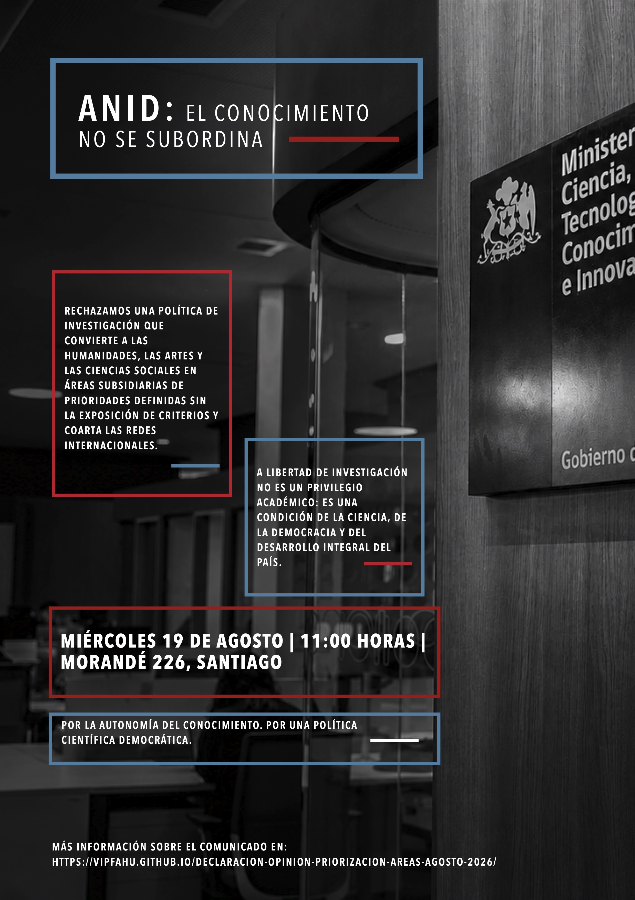

Declaración pública · Chile · Agosto de 2026
La tecnología es la sociedad por otros medios
Frente a la definición de líneas prioritarias de la Agencia Nacional de Investigación y Desarrollo (ANID) que evade la definición explícita de áreas de dedicación exclusiva por parte de las Ciencias Sociales, las Humanidades y las Artes, este espacio reúne una declaración pública y las opiniones de la comunidad académica y ciudadana. Una versión final del comunicado será elaborada integrando el total de las opiniones registradas.
Registro · Entrega de la carta
Material audiovisual de la entrega de la carta en el Ministerio de Ciencia, Tecnología, Conocimiento e Innovación, el miércoles 19 de agosto de 2026.
Convocatoria · Entrega de la carta

01 · La declaración
Las comunidades académicas de las Ciencias Sociales, las Humanidades y las Artes manifestamos nuestra profunda preocupación por la decisión de la Agencia Nacional de Investigación y Desarrollo (ANID) de establecer líneas prioritarias de investigación que concentren hasta el 70% de las adjudicaciones, excluyendo nuestras áreas de conocimiento e investigación, así como la de disciplinas cuya deriva en aplicaciones tecnológicas no es necesariamente inmediata o directa.
Comprender la sociedad y la subjetividad no es un complemento del desarrollo científico y tecnológico, ni un aspecto secundario o aplazable, sino su condición de posibilidad. Los desafíos que el propio Gobierno ha declarado urgentes, por ejemplo, la transformación digital, desafíos astronómicos, la crisis climática, el crimen organizado, minería, entre otros, son, en su origen y en sus consecuencias, fenómenos sociales, culturales, políticos y éticos. Ninguna transición tecnológica ocurre al margen de las personas, las instituciones, los sentidos que la sostienen y las prácticas en que adquieren legitimidad y se hacen aprehensibles y domesticables para un determinado colectivo.
La definición, asimismo, entra en conflicto con lo instruido en la Ley 21.105 que encomienda fomentar la investigación básica y aplicada en todas las áreas del conocimiento, enumerando expresamente las ciencias sociales, las artes y las humanidades, y ordenando un adecuado balance entre la investigación inspirada por la curiosidad y la orientada por objetivos (art. 4, letra b). La Radiografía HACS del propio Ministerio (2023) constató que Chile es el país de la OCDE con menor proporción de graduados de pregrado en estas áreas (14%, según cifras OCDE 2021). De acuerdo con el mismo informe, en países como Estados Unidos, Italia, Islandia, Turquía, Reino Unido y Grecia, las personas egresadas en esas áreas se aproximan al 40%, lo que llama, quizás, a considerar las formas de articulación entre disciplinas orientadas a la promoción de oportunidades productivas, en lugar de considerar la limitación de oportunidades para el desarrollo de investigación creativa.
Nos preocupa, además, la interpretación que se realiza de los organismos de investigación. ANID ha sido constituida con un propósito distinto a organismos como CORFO. De este modo, el fin histórico de FONDECYT ha sido financiar investigación de excelencia y fortalecer la investigación básica en todas las áreas, a partir de aquello que las comunidades científicas definen preguntas relevantes. FONDECYT ha organizado la actividad de investigadores e investigadoras durante más de 40 años, vinculándose a la configuración de trayectorias y evaluación del prestigio académico, así como la articulación de sistemas de acreditación de programas e instituciones tanto públicas como privadas. En particular, las convocatorias FONDECYT Postdoctorado, han operado fundamentalmente no como un medio para la contratación de académicos y académicas, sino para la generación de instancias de especialización y, sobre todo, creación de redes actuales y futuras de intercambio y productividad científica, en tanto la adjudicación implica el vínculo con investigadores e investigadoras nacionales. Las modificaciones integradas, que además de priorizar áreas, eliminan la posibilidad de adjudicar a personas extranjeras sin residencia en Chile, coarta las condiciones para la internacionalización de las actividades de investigación nacional. Si bien el sentido del programa puede evaluarse, esperamos, en el horizonte de crear condiciones basales para el desarrollo de investigación nacional, queremos hacer notar la importancia actual del programa en la configuración actual del sistema científico nacional.
Con lo anterior, nos interesa transmitir que nuestra intención no es cuestionar el hecho o posibilidad de que el gobierno priorice áreas o temas vinculados con la investigación o desarrollo tecnológico. Sobre lo que nos manifestamos remite a que, para ello, se emplee un instrumento cuyo destino ha sido distinto y que promueve, precisamente, la excelencia de investigación. Al respecto, la experiencia comparada indica que la priorización establece su mejor rendimiento cuando se organiza en torno a problemas que faciliten la articulación entre disciplinas y no contra estas, así como también complementando sistemas de financiamiento permanentes y abiertos de investigación, con programas de financiamiento estratégico, evitando que las soluciones se focalicen exclusivamente en la definición de “problemas técnicos”. Al respecto, la misma experiencia comparada enfatiza la necesidad de considerar criterios heterogéneos de evaluación en estos procesos de priorización, considerando, por ejemplo, calidad científica, relevancia pública, capacidades nacionales y territoriales, cooperación interdisciplinaria, contribución a políticas públicas, viabilidad para producir resultados verificables, inclusión territorial y social, entre otros.
La misiva no consiste en un planteamiento gremial. En la priorización tampoco figuran como áreas la educación, las matemáticas, la química, la arquitectura o el urbanismo.
Una política de investigación que jerarquiza disciplinas por exclusión empobrece el sistema nacional de conocimiento, precariza trayectorias académicas, en especial las de las generaciones jóvenes. Así también priva al país de la capacidad de reflexionar y comprenderse a sí mismo en el momento en que más lo necesita, cuestión clave y estratégica para la innovación. Sobre todo, coarta una condición específica para desarrollo y transformación social y tecnocientífica: la creación.
Solicitamos al Ministerio de Ciencia, Tecnología, Conocimiento e Innovación revisar los criterios y el procedimiento con que se definieron estas prioridades, hacer explícito el modo en que se configura este tipo de medidas, haciendo públicos los criterios y recomendaciones emergentes del Consejo Nacional de Ciencia, Tecnología, Conocimiento e Innovación y los grupos de estudio FONDECYT, e incorporar a las Ciencias Sociales, las Humanidades y las Artes en pie de igualdad, mediante un proceso deliberativo, transparente y con participación efectiva de las comunidades de investigación.
Esta versión integra las 0 opiniones registradas junto con las adhesiones de firmantes, y es la que se entregará al Ministerio.
02 · Contexto
Qué decidió ANID
La agencia estableció líneas prioritarias destinadas a orientar sus instrumentos de financiamiento hacia áreas definidas como estratégicas, de carácter científico-tecnológico y productivo. Las Ciencias Sociales, las Humanidades y las Artes no fueron incluidas entre ellas.
Por qué preocupa
La priorización condiciona el acceso futuro a fondos concursables y envía una señal de jerarquización del conocimiento. Afecta la continuidad de líneas de investigación, la formación de posgrado y las trayectorias de investigadoras e investigadores jóvenes.
Qué solicitamos
Revisión pública de los criterios de priorización, incorporación de las Ciencias Sociales, las Humanidades y las Artes en la definición de prioridades, y garantías de financiamiento equitativo para todas las áreas del conocimiento.
Anexo 4 — Áreas prioritarias
Áreas prioritarias definidas por el Ministerio de Ciencia, Tecnología, Conocimiento e Innovación, para la focalización de los concursos de postdoctorado del Fondo Nacional de Desarrollo Científico y Tecnológico. Esta definición busca alinear la formación posdoctoral con los desafíos productivos, sociales y ambientales del país. Las áreas prioritarias definidas son las siguientes:
Biología, genética, genómica, biología molecular, neurociencias, inmunología, microbiología, enfermedades infecciosas, oncología, medicina de precisión, bioinformática, biotecnología, farmacología, salud pública y epidemiología.
Inteligencia artificial, aprendizaje automático, ciencia de datos, robótica, automatización, ciberseguridad, computación de alto desempeño, computación cuántica, semiconductores, microelectrónica, fotónica, Internet de las Cosas (IoT), sistemas autónomos, manufactura avanzada, materiales avanzados e infraestructura digital.
Astronomía observacional y teórica, astrofísica, cosmología, física experimental y teórica, ingeniería óptica, óptica adaptativa, fotónica, instrumentación astronómica, diseño, integración y operación de instrumentos científicos, detectores y sensores, electrónica e ingeniería de control, procesamiento de datos científicos, computación de alto desempeño y tecnologías para observatorios terrestres y espaciales.
Ingeniería espacial, diseño, integración y operación de satélites, cargas útiles e instrumentación espacial, sensores remotos, observación de la Tierra, geodesia, navegación y posicionamiento (GNSS), telecomunicaciones satelitales, procesamiento de datos geoespaciales y aplicaciones para agricultura, minería, recursos hídricos, océanos, monitoreo ambiental, prevención y respuesta ante desastres e infraestructura crítica.
Adaptación y mitigación del cambio climático, energías renovables, almacenamiento de energía, hidrógeno verde y sus derivados, eficiencia energética, captura y almacenamiento de carbono, recursos hídricos, biodiversidad, restauración de ecosistemas, resiliencia y soluciones basadas en la naturaleza.
Exploración y procesamiento de minerales, minería inteligente, automatización y robótica minera, inteligencia artificial aplicada a minería, metalurgia, cobre, litio y minerales críticos, gestión de relaves, economía circular, descarbonización y tecnologías para una minería sostenible.
Agricultura de precisión, biotecnología agrícola, genética y mejoramiento vegetal, sanidad vegetal, riego inteligente, agricultura digital, producción sostenible de alimentos, inocuidad alimentaria, trazabilidad y adaptación al cambio climático.
Acuicultura sostenible, salmonicultura, genética y nutrición de especies acuáticas, sanidad acuícola, oceanografía, biotecnología marina, biodiversidad marina, algas, recursos pesqueros, monitoreo oceánico y tecnologías para la producción sostenible de recursos marinos.
Productividad, mercado laboral, desarrollo de capital humano avanzado, educación técnico-profesional, apprenticeships, aprendizaje basado en el trabajo, reconversión laboral, micro credenciales, habilidades para tecnologías emergentes, innovación, adopción tecnológica y evaluación de políticas públicas.
Crimen organizado, narcotráfico, narco cultura, delincuencia, justicia penal, estudios socio jurídicos, prevención del delito, justicia juvenil, sistema penitenciario, reinserción social, ciberseguridad, gestión del riesgo, gobernanza, modernización del Estado y evaluación de políticas públicas.
03 · Opiniones
Registra tu opinión
Mapa de las opiniones
Principales argumentos presentes en el total de 0 opiniones registradas.
El tamaño de cada círculo indica cuántas opiniones abordan el eje; pasa el cursor (o toca el círculo) para leer el argumento completo. Una opinión puede abordar varios ejes.
Opiniones registradas
004 · Participación
Proporción de disciplinas o áreas y de universidades presentes en las opiniones registradas. El diagrama se actualiza con cada nueva opinión.
Por disciplina o área
Por universidad o institución
05 · Firmantes
Hasta ahora, 0 personas han adherido a la declaración. Si no deseas escribir una opinión, puedes registrar aquí tu adhesión.
06 · Preguntas frecuentes
¿Quién puede adherir y opinar?+
Cualquier persona interesada: académicas y académicos, estudiantes, profesionales y ciudadanía en general. Indicar filiación y disciplina ayuda a dimensionar el alcance de la comunidad afectada, pero no es obligatorio.
¿Puedo opinar de forma anónima?+
Sí. El nombre es opcional al registrar una opinión. Las adhesiones a la declaración, en cambio, requieren nombre, pues integran la lista pública de firmantes.
¿Qué se hará con las opiniones y firmas?+
Serán sistematizadas y entregadas formalmente a la autoridad competente para su presentación ante Dirección Nacional de ANID y al Ministerio de Ciencia, Tecnología, Conocimiento e Innovación, como antecedente del proceso de revisión que la declaración solicita.
¿Quién organiza esta iniciativa?+
Una red autoconvocada de investigadoras e investigadores de las Ciencias Sociales, las Humanidades y las Artes de universidades chilenas.
07 · Contacto
Para consultas de prensa, gestiones institucionales o para sumar a tu organización, escríbenos a viceinvestigacionfahu@usach.cl.